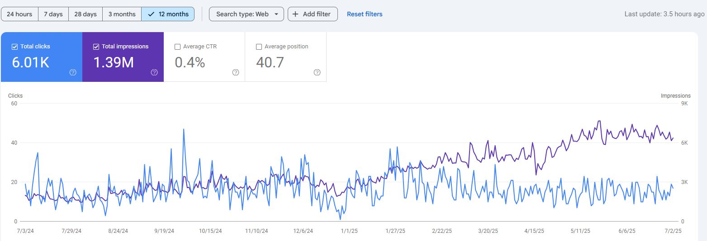
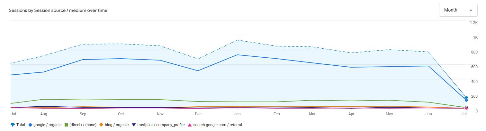
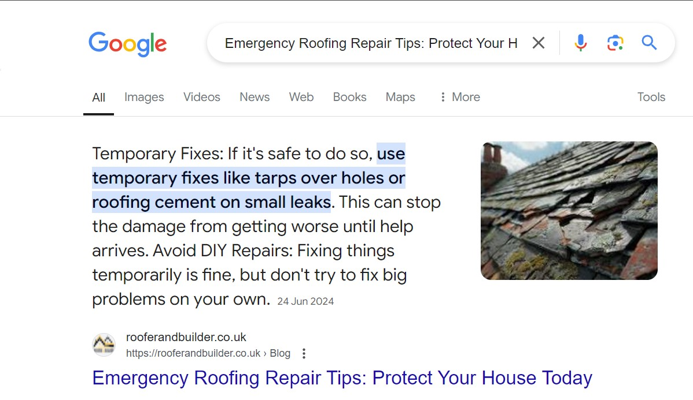
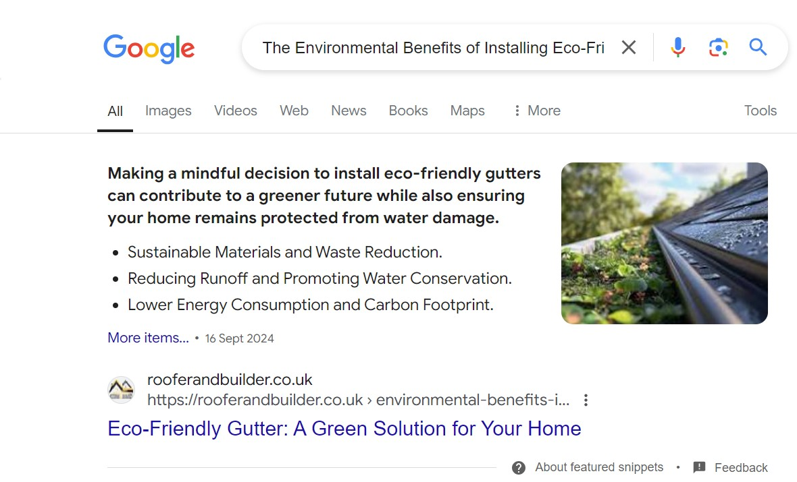
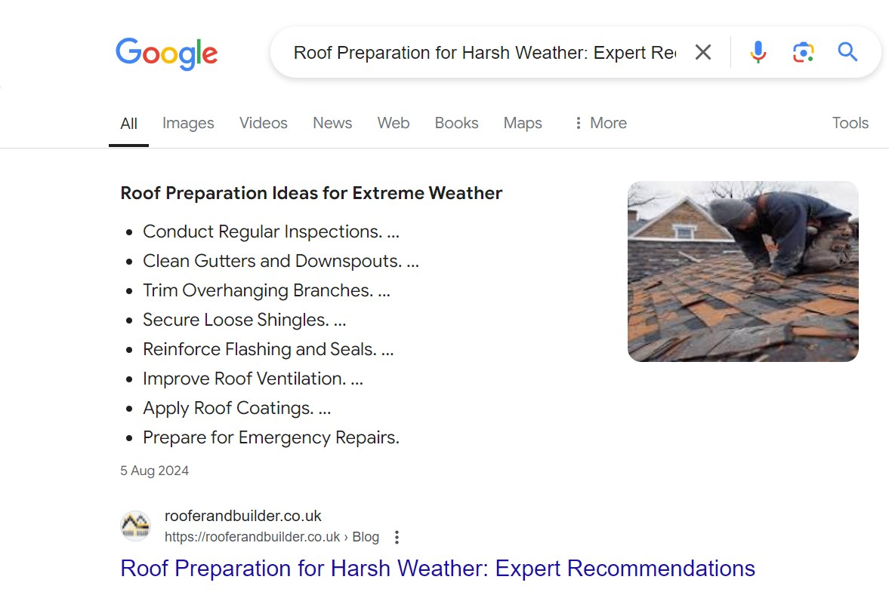
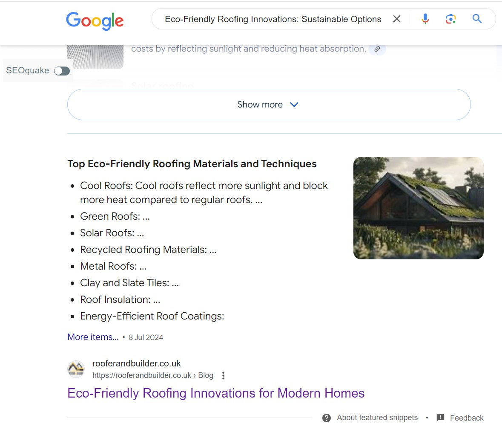

Local SEO, technical optimisation and content strategy for a UK roofing business, focused on improving organic visibility, local search performance and answer-focused search results.
Client: Roofer & Builder
Industry: Roofing & Home Improvement Services
Roofer & Builder needed stronger visibility for non-branded and location-based roofing searches. Important service pages were competing in a highly local search environment, while the website also required technical and content improvements.
The project focused on improving search visibility for commercially valuable roofing services while strengthening the website's ability to rank across relevant local areas.
The backlink profile, Google Business Profile and informational content also required improvement to support wider organic and local search growth.
Carried out technical SEO audits to identify issues affecting crawlability, indexation, page structure, metadata and internal linking.
Technical improvements helped create a stronger foundation for service pages, location pages and informational content.
Strengthened local search optimisation across the website and Google Business Profile to improve visibility for roofing-related searches in relevant service areas.
Developed and optimised location-focused landing pages for areas including St Helens, Aintree, Anfield, Crosby, Formby and Widnes.
Each page was aligned with local search intent while maintaining useful and relevant information for potential customers.
Developed commercial service page content for emergency roofing, flat roofing, tile roofing and gutter repairs.
Created search-led informational content around roofing problems, maintenance, sustainability and seasonal roofing topics.
Supported local authority through relevant backlinks, business citations and off-page SEO activity designed to strengthen local relevance and website authority.
The campaign delivered sustained organic visibility and search traffic across the 12-month reporting period.
Across the 12-month period from July 2024 to July 2025, Google Search Console recorded approximately 1.39 million impressions and 6.01K clicks.

Google Search Console performance showing organic search clicks and impressions across the campaign period.
Google Analytics also showed consistent organic sessions throughout the campaign, supporting the wider search visibility recorded in Search Console.

GA4 traffic data showing the contribution of organic search sessions across the reporting period.
Informational roofing content was developed around specific questions and search intent, with clear answer structures designed to make the content easy for both users and search engines to understand.
Several articles gained prominent featured-result visibility in Google for roofing, maintenance and sustainability-related searches.

Emergency Roof Repair Tips

Eco-Friendly Gutter Systems

Roof Preparation for Harsh Weather

Eco-Friendly Roofing Innovations